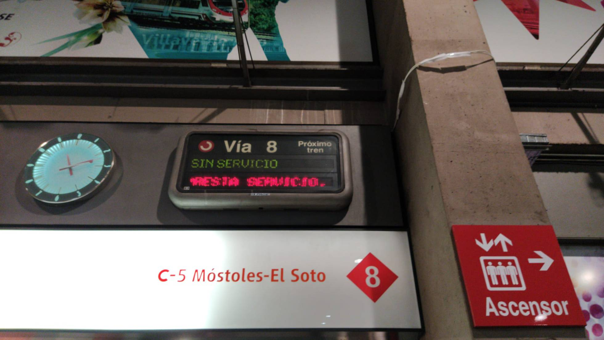

Demoras en la C5 por una avería entre Atocha y Embajadores
Se acumulan 20 minutos de retrasos en la línea que conecta Móstoles con Atocha, Fuenlabrada y Humanes desde las ocho y media de la mañana

Una avería en las vías entre las estaciones ferroviarias de Atocha y Embajadores ha provocado este miércoles retrasos en la línea 5 de Cercanías Madrid, ya que los trenes han tenido que circular en ese tramo por una única vía. La avería se ha solucionado a las 11.30, ha añadido la misma portavoz.
La línea, que conecta Móstoles con Atocha, Fuenlabrada y Humanes, ha sufrido demoras desde 8.30, según han indicado portavoces de Renfe y de Adif, que la compañía ferroviaria cifra en unos 10 minutos de media.
#MadC5 Por una avería en las instalaciones en la estación de Atocha los trenes en ambos sentido están sufriendo fuertes demoras.
Sobre las 9.00, Adif se ha cortado la circulación en una de las vías de este tramo para reparar la incidencia, "una avería de señales de ocupación de circuitos". Se trata de un fallo en la señalización que muestra una ocupación de vía cuando en realidad el tramo está vacío, por lo que los trenes tienen que ralentizar su paso para comprobar que no hay dicha acumulación de vehículos. Según Renfe, la incidencia ha quedado solucionada a las 11.30, momento desde el que la línea está recuperando la normalidad.
La C5 es una de las más largas y con más usuarios, que se han quejado de los retrasos en Twitter. "Lo justo sería que se me devolviese el dinero de mi abono mensual cada vez que sucedan este tipo de cosas de forma recurrente", dice un usuario. No es así. El "compromiso voluntario de puntualidad" de Renfe solo se aplica a la larga distancia. "En el caso de Cercanías, se aplican las indemnizaciones que marca la ley del sector ferroviario. A partir de una hora de retraso, el viajero tiene derecho a una devolución parcial del billete", explica la portavoz.
El martes, la rotura de una tubería del Canal de Isabel II provocó retrasos desde primera hora hasta pasadas las 10.30 en las líneas de C1, C2, C7, C8 y C10 de Cercanías.